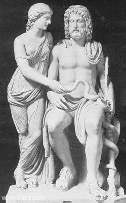

Zorbalığıyla ünlü kral Flegyas'ın (Phlegias) kızı Koronis, gerçekten de çok güzeldi; üstelik babasına inat çok iyi yürekliydi... Ne var ki acımasız babasının halkına uyguladığı işkenceleri ve dayattığı kölelik yaşamını görmemek için, zamanının çoğunu kırlarda geçiriyordu...
Bu kır gezintileri sırasında bir gün, dünyamızın ormanlarını, bayırlarını çok seven tanrı Apollon'la karşılaştı... Apollon da bu güzel kıza hemen deli divane vuruluverdi! Şiirleriyle, ezgileriyle büyüledi onu. Herkeslerden gizli, unutulmaz serüvenler yaşadılar. Bu ilişkilerin sonunda güzel Koronis, sevgilisi tanrı Apollon'dan gebe kaldı. Ne var ki babasından çok korkan Koronis, gizlice doğurduğu bebeğini bir dağ başına bıraktı... Bir süre sonra olayın içyüzünü öğrenen kral Flegyas, tanrı Apollon'a çok öfkelendi ve en güzel tapınağını ateşe verdirdi. Bunun üzerine tanrı Apollon da bu zorba kralı, ölümünden sonra tanrı Hades'in Ölüler Ülkesi'nde çok uzun sürecek ağır bir cezaya çarptırdı...
Güzel Koronis'in dağ başına bıraktığı bebeğine bir çobanın keçisi kendiliğinden süt vermeye ve köpeği de ona bekçilik etmeye başladı. Köpeğini ve keçisini günlerce arayan çoban, sonunda onları ışıklar saçan bir bebeğin yanında buldu. Ve çoban, ışıklar saçan bu bebeğin tanrısal bir varlık olduğunu sezmekte gecikmedi... Onu kucakladığı gibi evine götürdü. Çobanın Asklepyos (Asklepios) adını verdiği bu bebeğin bakımıyla bir süre sonra Atadam Heyron (Kheiron) ve perikızları da ilgilenmeye başladılar... Tez serpilip büyüyen Asklepyos, bakıcısı ve eğitimcisi Atadam Heyron'dan hem avcılığı, hem de doğal bitkilerle pek çok hastalığı iyileştirme yöntemlerini öğrendi...
Artık yaşamının çoğunu geçirdiği ve pekçok yılanın bulunduğu Epidauros kentindeki halk, aynı zamanda ünlü bir hekimlik okulu da olan bir tapınak kurdu Asklepyos adına. Daha sonraları Ege'deki bazı kentlere de, Asklepiyeyon (Asklepieion) denen bu tapınak ve iyileştirme merkezlerinin benzerleri kurulacaktı... Bunların en ünlüsü, bugün Bergama dediğimiz kentteydi. Helenistik çağda kurulmuş olan bu kutsal tapınak ve sağlık merkezinde; bazı hastalıklara karşı temiz hava, kaplıca yoluyla uygulanan fiziksel iyileştirmelere ek olarak, telkin, eğlence ve kültüre dayalı yöntemler de uygulanıyordu. Bütün bunlar daha o çağda hekimliğin ne denli ileri olduğunu apaçık göstermekteydi. Anadolu'ya özgü bir özellik taşıyan bu hekimlik merkezlerinin benzerleri, binyıllar sonra Selçuklu ve Osmanlı çağlarında da kurulacaktı...
Asklepyos'un yaşadığı çağda bazı umarsız hastalar, dertlerine derman için onun bu tapınağına gelir ve geceyi orada geçirirlerdi. Bu hastaların söylediğine göre hekim tanrı Asklepyos, onların düşlerine girip gereken ilaçları söylerdi...

Asklepyos ve kızı Higiyeya
Yakınlarının anlattığına göre bu tanrı hekim, kendisine başvuran ünlü Glaukos'u iyileştirecek ilacı bir türlü bulamıyordu. Arayıp taramaktan bunaldığı bir sırada aniden önünde bir yılan belirdi. Elinde olmadan büyük bir korkuya kapılan Asklepyos, yerden kaptığı bir taşla vura vura yılanı öldürdü. Bu kez ortaya çıkan bir başka yılan gidip bu ölü yılanın üstüne bir ot koydu. Bunun üzerine ölü yılan aniden dirildi ve iki yılan birlikte odadan çıkıp gittiler!.. İşte Asklepyos, yılanı dirilten aynı otla Glaukos'u iyileştirdi! Bu olaydan sonra yılanın, hastaya iyi gelecek bitkiyi gösterdiği inancı yerleşti... O yüzden de zaten onun yaşadığı kentlerde bolca bulunan yılan; o çağlarda olduğu gibi günümüzde de artık hekimliğin simgesine dönüşecekti.
Gene bu hekim tanrı Asklepyos, tanrıça Atena'nın kendisine verdiği Gorgo denen canavarın kanıyla, ölüleri bile diriltmeye başladı. Yeraltı dünyasının sevimsiz tanrısı Hades; bu gidişle Ölüler Ülkesi'nin kepenklerini indirmek zorunda kalacağını anlamakta gecikmedi!.. Hemen Baştanrı Zeus'a gidip durumu ayrıntılarıyla anlattı. Konuşurken bir yandan da ağlayıp sızlanıyordu Hades! Baştanrı Zeus, Ölüler Ülkesi'nin tanrısı Hades'in sızlanmasına hak verdi. Çünkü akıllarını kullanıp bilimlerle aydınlandığı zaman, kendisine bile meydan okuyacağını çok iyi bildiği insanoğlunun bir de ölümsüzlüğe ulaşmasını haliyle düşünmek bile istemiyordu!.. Bu yüzden Zeus, doğanın gizlediği ilaçlarla ölümün bile önünü kesmeye kalkan bu asi Asklepyos'u, Olimpos'tan saldığı bir yıldırımlarla yaktı!
Tanrı Asklepyos, ardında kızı ve aynı zamanda yardımcısı olan sağlık tanrıçası Higiyeya'yı (Hygieia)[5] bıraktı insanlığa armağan olarak. Asklepyos'un babası tanrı Apollon da, Baştanrı Zeus'un bu şekilde oğlunu yıldırımlarla yakıp kavurmasına çok içerledi. Bu yüzden o da gidip yeraltındaki demirci işliklerinde yıldırımlar üretip Zeus'a sunan Tepegöz denen Kikloplardan birkaçını öldürdü!.. Bu olaya çok öfkelenen Baştanrı Zeus da, Apollon'u Olimpos Tanrılar Ülkesi'nden kovup yeryüzüne sürgün etti... Yeryüzünde gene Zeus'un buyruğuyla tam bir yıl Yunanlı kral Admetos'un buyruğunda köle olarak çobanlık yapmak zorunda kaldı!.. Ne var ki tanrı Apollon da zamanını boşa geçirmedi; en güzel şiirlerini ve dünyamızın güzelliğiyle ilgili en içten ezgilerini bu kölelik sürecinde üretti...
Bir süre sonra cezası biten tanrı Apollon'la Baştanrı Zeus barıştılar... Bu barışmanın onuruna Baştanrı, hekimliğin tanrısı insansever Asklepyos'u, gökyüzünde çok parlak bir yıldıza dönüştürdü.